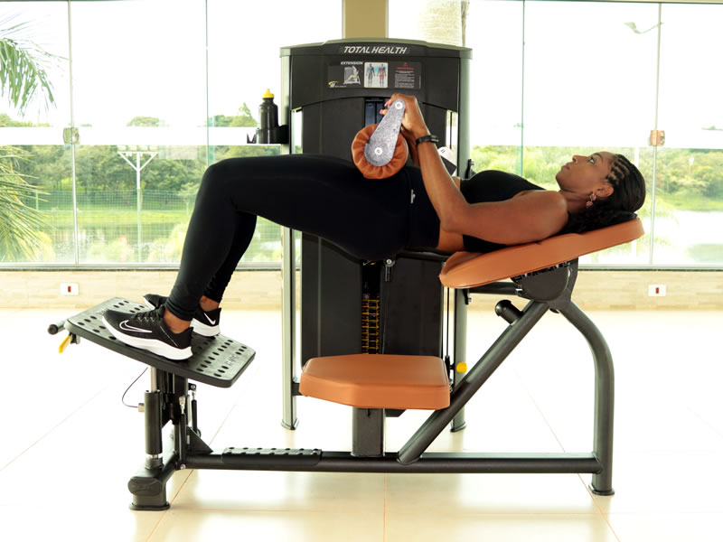
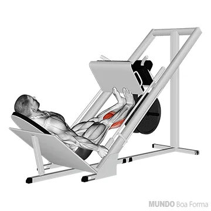

CADEIRA ABDUTORA - 3X20.
Fazer pico de contração de 2 segundos em todas as repetições segurando aberto, deixa queimar o musculo.

GLUTEO COICE NA POLIA - 3X10.
Manter o abdomen contraído e a postura alinhada, faça devagar.

ELEVAÇÃO PELVICA NA BARRA LIVRE OU MAQUINA - 4X10.
Na primeira Serie mais leve para aquecer e depois as outras 3 Series não passe de 10, passou aumente a carga.
AGACHAMENTO SUMÔ COM HALTER - 4X12.
Peito estufado, bumbum empinado e força no calcanhar.

CADEIRA EXTENSORA UNILATERAL - 4X10.
Drop Set em todas as series. Costa e Quadril coladas no banco, fazer pico de contração em cima de 1 segundo.
PANTURRILHA no leg press - 3X20
Controle o movimento e tenha a maior amplitude do exercício "sem Correr".
